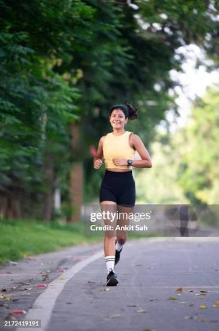

The centre stage below is the actual job-page loader copied verbatim from site/server.py JOB_PAGE — same canvas, same Three.js wireframe mesh + lime core, same rotation speeds, same #pct number inside, same stage list. Only the poll loop is simulated (compressed clock + scenarios) so you can walk the whole 0→100 without uploading. Side rail holds the prompt-kit pieces.
centre: verbatim live loaderrail: thinking-bar · steps · reasoning
Scrub0:00 / 2:00
Building your runner…
Gemini audits your form while TripoSR rebuilds your body in 3D.

preparing…
elapsed 0:00
0%
·Queued
·Form audit — scoring zones
·3D rebuild — growing the mesh
·Bake — score + report ready
job sandbox-demo
3D preview offline (CDN blocked) — progress continues below.
Queued — waiting for worker…
Parallel tasks — steps
·
Voice pre-warmTTS lines cached during mesh
·
Anchors per-zoneparallel ray hits
·
Gemini partialsscore first, zones stream
Fidelity notes — mesh, lights, camera, rotation speeds and stage copy are byte-identical to JOB_PAGE; only #loadwrap width is responsive. Difference from live: the #pct number eases 0→1→2…→100 instead of snapping 4→30→93, so you can see it count. Needs network for the Three.js CDN (same as live); offline it shows the same fallback note as the real page. Open via open sandbox_loader.html.